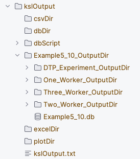
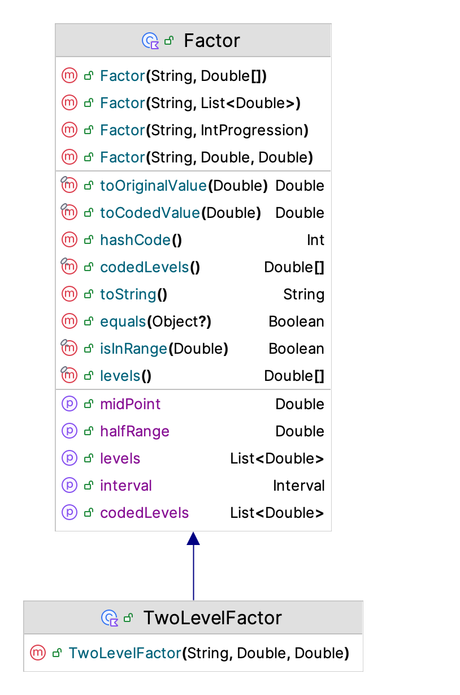
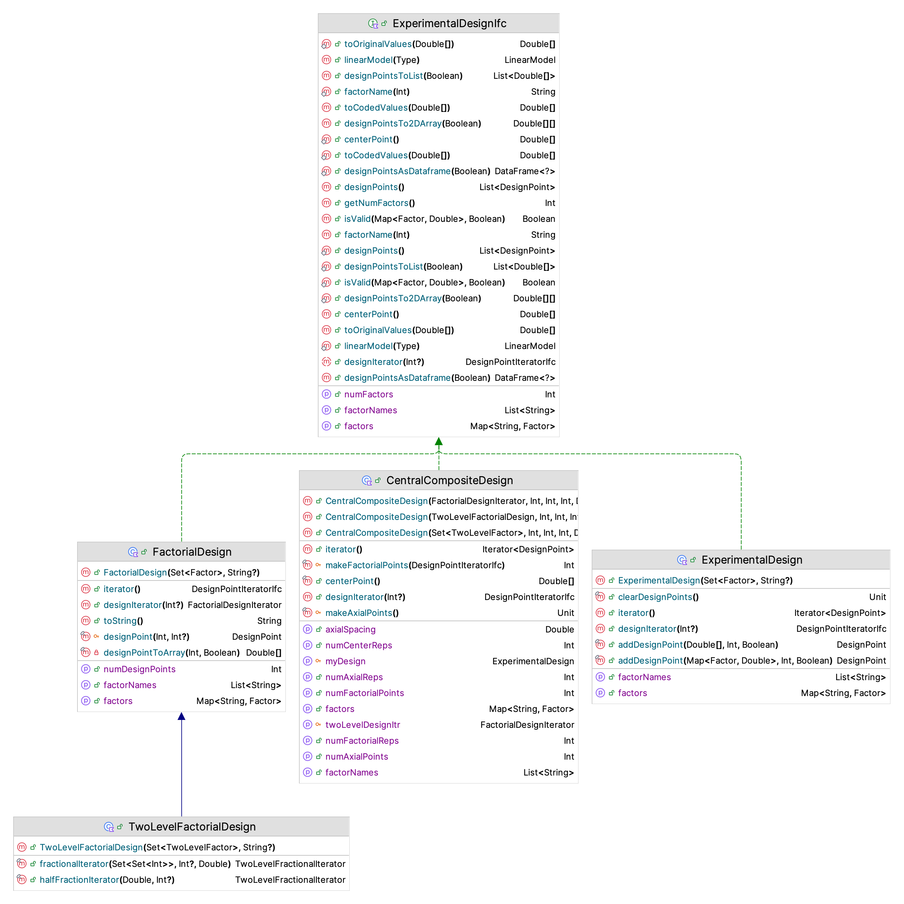
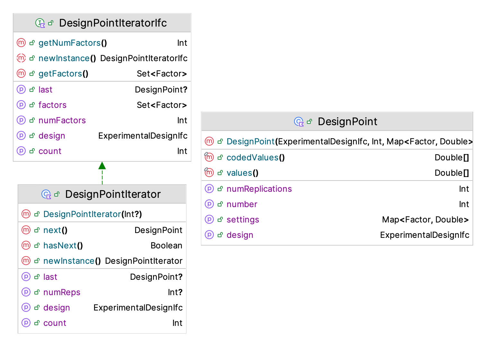
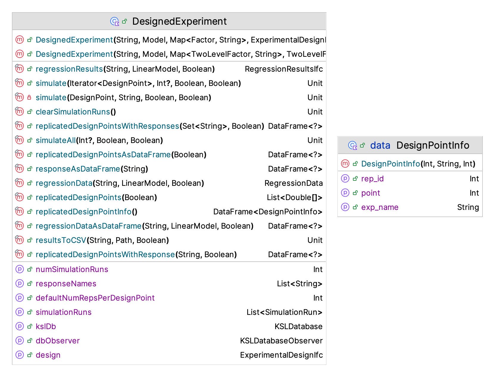
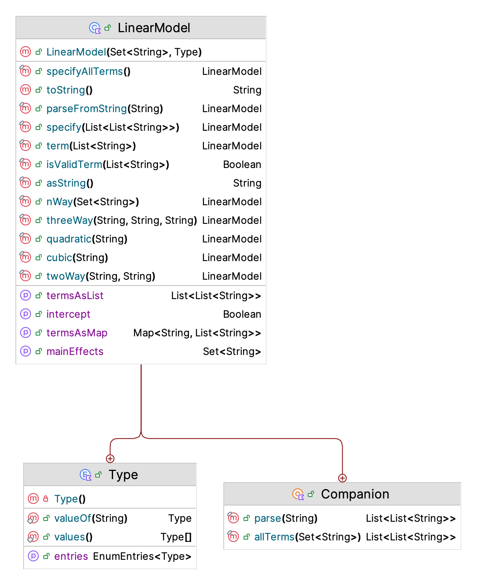
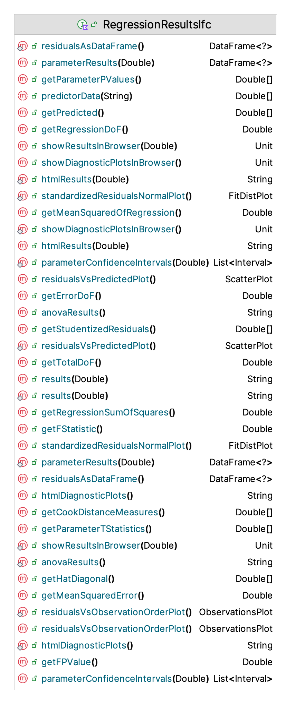
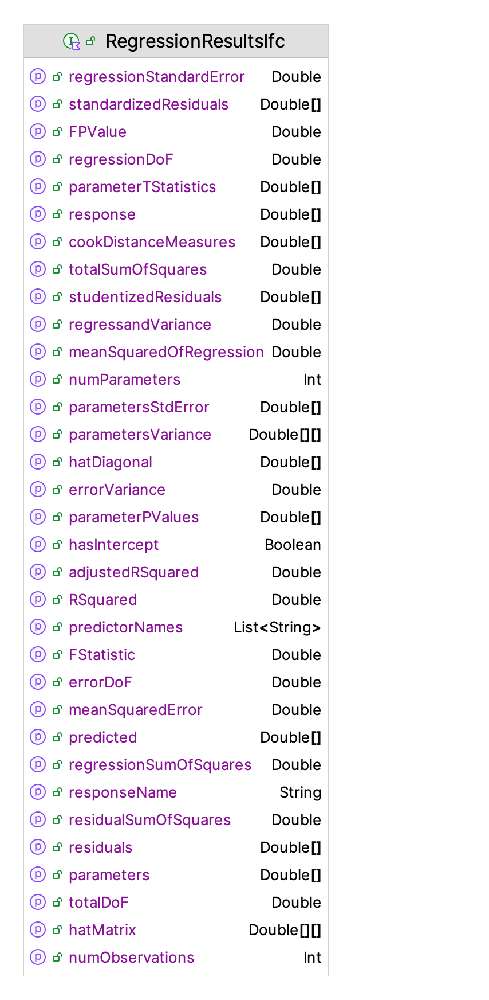
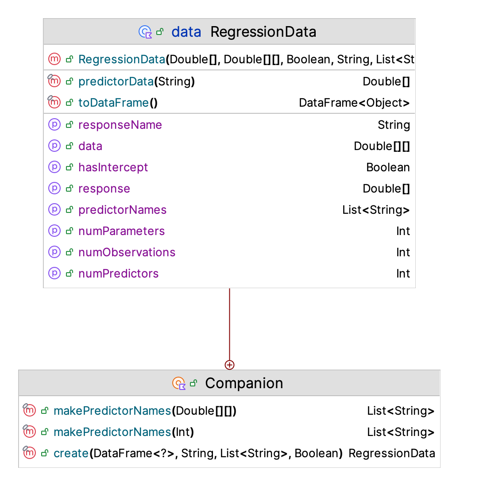

10 Simulating Many Scenarios and Performing Experiments
Learning Objectives
- To be able to explain how a KSL model can be instrumented for analysis.
- To be able to instrument a KSL model for scenario analysis and experimentation.
- To be able to setup and execute a set of model scenarios.
- To be able to explain and discuss the application of experimental design methods within a simulation modeling context.
- To be able to recognize how simulation experiments are different from standard application of experimental methods.
- To be able to apply experimental design methods within the KSL for simulation analysis.
This chapter builds on the methods presented in Chapter 5. Section 5.7 introduced how simulation models can be used to compare different system configurations. An important aspect of the comparison process was to select the best simulation configuration (or to screen out inferior configurations). Section 10.1 of this chapter illustrates how to simulate many configurations, while Section 10.2 discusses how to setup experiments. Both of these situations beg one particular question. How to specify the configurations to be analyzed?. To specify a configuration, we must instrument the model so that the parameters of interest can be controlled.
A simulation model has many parameters that can be varied. Each parameter setting represents a different system configuration. All possible parameter settings represent the design space of the problem. This chapter presents concepts for how to configure scenarios to explore the design space of a problem and the need for the use of systematic experimental design methods for this process. We explore the design space to make inferences about how the real system will behave under different parameter settings (i.e. for different design configurations).
The first part of this chapter discusses the underlying architecture provided by the KSL to instrument models. This architecture will be used to setup scenarios that analyze a simple situation in order to illustrate that the same process can be used for larger models.
Section 10.2 of this chapter presents methods that allow the analyst to systematically explore the design space using experimental design methods. Using experimental design methods facilitates efficient allocation of simulation runs for the purpose of understanding the relationships between the inputs and outputs of the model. Within this context, the analyst must explicitly specify the framework for setting the parameters to obtain the desired analysis. That is, the analyst must specify an experimental design.
This chapter provides example code of using the KSL to implement scenarios and experimental designs. The full source code of the examples can be found in the accompanying KSLExamples project associated with the KSL repository. The files for each example of this chapter can be found here.
10.1 Simulating Many Scenarios
As noted in the introduction, there is often a need to simulate many variations of the same or different models and capture the results for further analysis. This section provides an overview of the KSL constructs that facilitate the running of many scenarios and instrumenting a model for experiments. The primary purpose of this section is to explain the built in constructs and illustrate their use within simple examples. In most realistic situations, the models will have more complex input and output mapping than illustrated in this section. The illustrated constructs can be readily scaled up to larger models and more complex situations; however, this section only presents basic use cases. We start by understanding controls and how to manage the parameters of random variables.
10.1.1 Control Annotations
Because simulation models may have many types of inputs variables that may need to be changed by the modeler, the KSL defines an access protocol based on Kotlin property variables that have been annotated to define them as a controllable variable. The annotations provide meta-data about the element that can be used to define an approach based on reflection for setting the values of the properties prior to running a simulation model. This functionality is implemented in the ksl.controls package.
The KSLControl annotation can be used on the setter method of properties within model elements to indicate that those properties can be used to control the execution of the simulation model. The annotation field type must be supplied and must be one of the valid control types as specified by the enum ControlType. The user is responsible for making sure that the type field matches (or is consistent with) the type of the property. Even though the optional annotation fields (lowerBound and upperBound) are specified as double values, they will be converted to an appropriate value for the specified type. Boolean properties are represented as a 1.0 (true) and 0.0 (false) within the numerical conversion for the controls. If a control is BOOLEAN, then the user can supply a 1.0 to represent true and a 0.0 to represent false when setting the control, which will then be set to true or false, appropriately. Current control types include (Double, Int, Long, Short, Byte, Float) and Boolean. In essence, the numeric types are all represented as a Double with appropriate conversions occurring when the property is assigned.
@MustBeDocumented // flag inclusion in documentation
@Inherited // flag that it is inherited by subclasses
@Target( AnnotationTarget.PROPERTY_SETTER) // targets setters ONLY
annotation class KSLControl(
/**
* the type of the control
*/
val controlType: ControlType,
/**
* the name of the control
*/
val name: String = "",
/** If this field is not specified, it will be translated to the smallest
* negative value associated with the type specified by the field type.
* For example, if the type is INTEGER then the default lower bound will
* be Integer.MIN_VALUE. The user can supply more constraining values for
* the bounds that are within the range of the associated type.
*/
val lowerBound: Double = Double.NEGATIVE_INFINITY,
/** If this field is not specified, it will be translated to the largest
* positive value associated with the type specified by the field type.
* For example, if the type is INTEGER then the default lower bound will
* be Integer.MAX_VALUE. The user can supply more constraining values for
* the bounds that are within the range of the associated type.
*/
val upperBound: Double = Double.POSITIVE_INFINITY,
/**
*
* comment associated with the annotation
*/
val comment: String = "",
/** Indicates whether to include in the controls for the model or not. Provides
* a simple mechanism for turning off or not including specific controls.
* The default is to include the control in the extraction process.
*/
val include: Boolean = true
)The KSLControl annotation becomes more useful if you provide carefully considered values for its parameters. The annotation KSLControl has been defined with properties controlType, name, lowerBound, upperBound, comment, and include. The most important properties are controlType and the bounds. By default the bounds are positive and negative infinity.
The PalletWorkCenter model that was illustrated in Chapter 5 has an annotated property. In the following code, we see the Kotlin annotation syntax @set:KSLControl to annotate the numWorkers property for the PalletWorkCenter model.
@set:KSLControl(
controlType = ControlType.INTEGER,
lowerBound = 1.0
)
var numWorkers = numWorkers
set(value) {
require(value >= 1) { "The number of workers must be >= 1" }
require(!model.isRunning) { "Cannot change the number of workers while the model is running!" }
field = value
}In the example code for the numWorker property, the lower bound has been specified as 1.0 to indicate that the value of this property cannot be less than 1.0. The control type of ControlType.INTEGER ensures that even though the control’s value is specified as a Double, the supplied value will be converted to an Int when it is applied. This approach simplifies the specification of parameter values.
Model elements that are part of the KSL framework may already have properties that have been annotated as a KSLControl. For example, the initial value property for a Variable has been annotated as follows.
@set:KSLControl(
controlType = ControlType.DOUBLE
)
override var initialValue: Double = theInitialValue
set(value) {
require(domain.contains(value)) { "The initial value, $value must be within the specified range for the variable: $domain" }
if (model.isRunning) {
Model.logger.info { "The user set the initial value during the replication. The next replication will use a different initial value" }
}
field = value
}Thus, when you use provided KSL model elements, you should note that you may already have pre-defined controls.
The KSLControl annotation covers numeric properties (Double, Int, Short, Byte, and Float), which are all converted to a Double when utilized within KSL constructs. It also covers the case of a Boolean control by mapping true to 1.0 and false to 0.0. A wide-range of situations can be handled simply by mapping numbers over to cases. For example, by using an integer control, you can condition based on the value of the integer and invoke different decision paths. Thus, properties annotated with KSLControl can be used to do more than just set the value of a variable.
For categorical variables, which do not naturally have an ordering, it can be useful to use the StringControl annotation.
@MustBeDocumented
@Inherited
@Target(AnnotationTarget.PROPERTY_SETTER)
annotation class KSLStringControl(
val allowedValues: Array<String> = [],
val name: String = "",
val comment: String = "",
val include: Boolean = true,
)The annotation can be specified with a list of values that are permitted. Finally, there is the possibility of specifying properties as general JSON controls. JSON (JavaScript Object Notation) is a lightweight, text-based data format used to store and exchange information.
@MustBeDocumented
@Inherited
@Target(AnnotationTarget.PROPERTY_SETTER)
annotation class KSLJsonControl(
val expectedTypeHint: String = "",
val name: String = "",
val comment: String = "",
val include: Boolean = true,
)JSON controls permit you to specify elements such as lists, arrays, maps as controls. The ksl.controls package guide provides additional details on how to specify string and JSON controls.
Annotations indicate in a generic manner which properties can be controllable. When you develop your own model elements, you can take advantage of the generic access protocol and build interesting ways to set the controls of your models. In what follows, we will illustrate how to use controls.
The Model class has a controls() function that returns all of the controls associated with every model element within a model. The following code illustrates how to access the controls for a model and print out their key values.
Example 10.1 (Illustrating a Control) The following example code illustrates how to access a control and change its value, resulting in the change of the associated property.
fun main() {
val model = Model("Pallet Model MCB")
// add the model element to the main model
val palletWorkCenter = PalletWorkCenter(model, name ="PWC")
println("Original value of property:")
println("num workers = ${palletWorkCenter.numWorkers}")
println()
val controls = model.controls()
println("Control keys:")
for (controlKey in controls.controlKeys()) {
println(controlKey)
}
// find the control with the desired key
val control = controls.control("PWC.numWorkers")!!
// set the value of the control
control.value = 3.0
println()
println("Current value of property:")
println("num workers = ${palletWorkCenter.numWorkers}")
}This results in the following output.
Original value of property:
num workers = 2
Control keys:
PWC.numWorkers
NumBusyWorkers.initialValue
PalletQ:NumInQ.initialValue
Num Pallets at WC.initialValue
Num Processed.initialCounterLimit
Num Processed.initialValue
P{total time > 480 minutes}.initialValue
Current value of property:
num workers = 3The important aspect of this output to notice are the keys associated with the controls. The numWorkers property associated with the PalletWorkCenter class has the key PWC.numWorkers. The PWC portion of the key has been derived from the assigned name of the created instance of the PalletWorkCenter class. Since the name of the model element is unique and the Kotlin property name numWorkers must be unique, this combination is unique and can be used to look up the control associated with the annotated property.
The second aspect of this example is the fact that prior to setting the control, the underlying numWorkers property had a value of 2.0. Then, after accessing the control and changing its value, the numWorkers property value was updated to 3.0. Now, this is a bit of overkill for changing the value of a single property; however, this illustrates the basic mechanics of using controls. Because the key for a control is unique, as long as you know the associated key you can change the value of the associated property via its associated control. A more useful use case would be to store the key-value pairs in a file and read in the new values of the properties from the file. Then, a generic procedure can be written to change all the controls. This is exactly the approach taken by many of the associated KSL applications.
10.1.2 Random Variable Parameters
Stochastic simulation models use random variables. Thus, it is common to need to change the values of the parameters associated with the random variables when running experiments. The architecture of the KSL with respect to random variables can be somewhat daunting. The key issue is that changing out the random variable or its parameters requires careful methods because random variables are immutable and changing their values must ensure that replications start with same settings (so that they are truly replicates). The second complicating factor is that the number of parameters associated with random variables varies widely by type of random variable. For example, an exponential random variable has one parameter, its mean, while a triangular random variable has three parameters (min, mode, max). Because of these challenges, the KSL provides a generic protocol for accessing and changing the parameter values of every random variable associated with a KSL model. This is accomplished via the RVParameterSetter class and its associated supporting classes within the ksl.rvariable.parameters package. This section will provide a brief overview of how to utilize this generic protocol for changing the parameters associated with the random variables of a KSL model.
Example 10.2 (Changing Random Variable Parameters) The following example code illustrates how to access the parameters of a random variable and how to apply the change within the model.
fun main() {
val model = Model("Pallet Model MCB")
// add the model element to the main model
val palletWorkCenter = PalletWorkCenter(model, name ="PWC")
println(palletWorkCenter.processingTimeRV)
val tmpSetter = RVParameterSetter(model)
val map = tmpSetter.rvParameters
println()
println("Standard Map Representation:")
for ((key, value) in map) {
println("$key -> $value")
}
val rv = map["ProcessingTimeRV"]!!
rv.changeDoubleParameter("mode", 14.0)
tmpSetter.applyParameterChanges(model)
println()
println(palletWorkCenter.processingTimeRV)
}Similar to how controls function, the parameters associated with a model can be retrieved by creating an instance of the RVParameterSetter class. The RVParameterSetter class has many representations of the parameters associated with random variables within the model. An instance of the RVParameterSetter class holds a map that uses the name of the random variable from the model as the key and returns an instance of the RVParameters class. The RVParameters class holds information about the parameters of the random variable based on their types (Double, Int, DoubleArray). Currently the RVParameterSetter class only holds random variables that have integer or double type parameters.
In the code example, first the string representation of the random variable is printed. We can see from the output that its name is ProcessingTimeRV and its underlying source of randomness is a triangular distributed random variable with minimum 8, mode 12, and maximum 15, using stream 3. The returned map of random variable parameters is used to get the RVParameters associated with the ProcessingTimeRV and then the mode parameter is changed to the value of 14.
ModelElement{Class Name=RandomVariable, Id=4, Name='ProcessingTimeRV', Parent Name='PWC, Parent ID=3, Model=Pallet_Model_MCB}
Initial random Source: TriangularRV(min=8.0, mode=12.0, max=15.0) with stream 3
Standard Map Representation:
Pallet_Model_MCB:DefaultUniformRV -> RV Type = Uniform
Double Parameters {min=0.0, max=1.0}
ProcessingTimeRV -> RV Type = Triangular
Double Parameters {min=8.0, mode=12.0, max=15.0}
TransportTimeRV -> RV Type = Exponential
Double Parameters {mean=5.0}
NumPalletsRV -> RV Type = Binomial
Double Parameters {probOfSuccess=0.8, numTrials=100.0}
ModelElement{Class Name=RandomVariable, Id=4, Name='ProcessingTimeRV', Parent Name='PWC, Parent ID=3, Model=Pallet_Model_MCB}
Initial random Source: TriangularRV(min=8.0, mode=14.0, max=15.0) with stream 3Then the code, applies the parameter change to the model. It is important to note that changing parameter value in the map does not change the parameter in the model. The change is only applied to the model when the applyParameterChanges() function is invoked. As we can see from the printed output for the associated random variable, the mode has been updated to 14. As was the case for controls, changing individual parameter values via this generic protocol is a bit of overkill for a single parameter. However, this protocol defines a general approach that will work as long as you know the name of the random variable within the model and the name of the parameter to change. The code prints out the map relationship from which you can easily make note of the associated names of the random variables and the names of their defined parameters.
The RVParameterSetter class also has a flattened structure for holding parameter values similar to how controls work. The name of the random variable is concatenated with its associated parameter name to form a unique key. The following code illustrates this representation.
val flatMap = tmpSetter.flatParametersAsDoubles
println("Flat Map Representation:")
for ((key, value) in flatMap) {
println("$key -> $value")
}The resulting print out of the map is show here.
Flat Map Representation:
Pallet_Model_MCB:DefaultUniformRV.min -> 0.0
Pallet_Model_MCB:DefaultUniformRV.max -> 1.0
ProcessingTimeRV.min -> 8.0
ProcessingTimeRV.mode -> 14.0
ProcessingTimeRV.max -> 15.0
TransportTimeRV.mean -> 5.0
NumPalletsRV.probOfSuccess -> 0.8
NumPalletsRV.numTrials -> 100.0Notice that the name of the processing time random variable ProcessingTimeRV has been concatenated with its parameter names min, mode, and max. This representation is useful for storing controls and random variable parameters within the same file or data structure for generic processing.
10.1.3 Building Models with ModelBuilderIfc
Controls allow a model to be instrumented. In previous examples, the approach taken for constructing a model instance followed the same pattern:
- create the model instance
- create model elements for the model
- configure the model and model elements
This is illustrated in the following code that creates the drive through pharmacy model.
fun main(){
//create the model instance
val m = Model()
// create model elements and attach them to the model
val dtp = DriveThroughPharmacy(m, name = "DriveThrough")
// configure model elements
dtp.arrivalRV.initialRandomSource = ExponentialRV(6.0, 1)
dtp.serviceRV.initialRandomSource = ExponentialRV(3.0, 2)
// configure model run parameters
m.numberOfReplications = 30
m.lengthOfReplication = 20000.0
m.lengthOfReplicationWarmUp = 5000.0
// simulate
m.simulate()
// get results
m.print()
}To be able to utilize models in a more general manner (e.g. in experiments or within related KSL applications), we need to generalize the model building process. This is the purpose of the ModelBuilderIfc interface:
interface ModelBuilderIfc {
fun build(
modelConfiguration: Map<String, String>? = null,
experimentRunParameters: ExperimentRunParametersIfc? = null
): Model
}The ModelBuilderIfc interface provides a contract that defines an abstract method that is responsible for constructing Model object instances. The KSL framework may call this build function many times. Thus, it is important that the implementation be kept as simple as possible and as close to the aforementioned pattern as possible. Refer the the documentation for further details. An example implementation for the drive through pharmacy model example is shown in the following code:
object DriveThroughPharmacyWithQModelBuilder : ModelBuilderIfc {
override fun build(
modelConfiguration: Map<String, String>?,
experimentRunParameters: ExperimentRunParametersIfc?
): Model {
val model = Model("DriveThroughPharmacyWithQ", autoCSVReports = false)
val sim = DriveThroughPharmacyWithQ(model, numServers = 1, name = "Pharmacy")
model.numberOfReplications = 30
model.lengthOfReplication = 20000.0
model.lengthOfReplicationWarmUp = 5000.0
return model
}
}The optional modelConfiguration parameter is available if there is some situation that cannot be handled via the controls framework to allow a model to be configured. The key of the map can be used to understand how the associated (mapped) value string should be interpreted. Think of this parameter as a generalization of the main(args: Array<String>) function that is commonly used to supply arguments to a program. The second optional parameter, experimentRunParameters can be used if you want to allow different run parameters during the build, rather than essentially hard-coding the defaults as in the example code. Keep in mind that it is best practice to provide appropriate default parameters. If you do not, the number of replications will be 1. The length of the replication will be infinity and the warm up period will be 0.0. If you do not specify a finite value for the length of the replication, then you are responsible for ensuring that condition within the model will stop the replication; otherwise, your program will never end.
Providing a builder for your models is essential for taking advantage of KSL based applications. The next section will illustrate how to utilize models and controls to run scenarios.
10.1.4 Setting Up and Running Multiple Scenarios
This section puts the concepts presented in the last two sections into practice by illustrating how to construct scenarios and how to execute the scenarios.
The code found in Example 5.7 has a very common pattern.
- create a model and its elements
- set up the model
- simulate the model
- create another model or change the previous model’s parameters
- simulate the model
- repeat for each experimental configuration
Within the KSL these concepts have been generalized by providing the Scenario class and the ScenarioRunner class. A scenario represents the specification of a model to run, with some inputs. Each scenario will produce a simulation run (SimulationRun). The naming of a scenario is important. The name of the scenario should be unique within the context of running multiple scenarios with a ScenarioRunner instance. The name of the scenario is used to assign the name of the model’s experiment. If the scenario names are unique, then the experiment names will be unique. In the context of running multiple scenarios, it is important that the experiment names be unique to permit automated storage within the associated KSL database.
The following code presents the constructor of a scenario. Notice that the key parameters of the constructor are a model builder, a map of inputs, and the name of the scenario. The input map represents (key, value) pairs specifying controls or random variable names (in flat map form) along with its assigned value.
class Scenario constructor(
val modelBuilder: ModelBuilderIfc,
name: String,
inputs: Map<String, Double> = emptyMap(),
stringInputs: Map<String, String> = emptyMap(),
jsonInputs: Map<String, String> = emptyMap(),
runParameters: ExperimentRunParameters,
modelConfiguration: Map<String, String>? = null,
val modelConstructionMode: ScenarioModelConstructionMode = ScenarioModelConstructionMode.MODEL_BUILDER
) : Identity(name) {
...I encourage you to review the Scenario class’s documentation for convenience constructors.
Once a scenario is defined, a list of scenarios can be provided to the ScenarioRunner class. The purpose of the ScenarioRunner class is to facilitate the batch running of all the defined scenarios and the collection of the simulation results from the scenarios into a KSLDatabase instance. Let’s take a look at how to use the ScenarioRunner class.
Example 10.3 (Using a ScenarioRunner) In this code example, we see that an instance of the ScenarioRunner class can be used to run many scenarios. The loop after running the scenarios is simply for the purpose of displaying the results.
fun main() {
val scenarioRunner = ScenarioRunner("Example5_10", buildScenarios())
scenarioRunner.simulate()
for (s in scenarioRunner.scenarioList) {
val sr = s.simulationRun?.statisticalReporter()
val r = sr?.halfWidthSummaryReport(title = s.name)
println(r)
println()
}
}The buildScenarios() function is simply a function that returns a list of scenarios. This is where the real magic happens. The first thing to note about the following code is that scenarios can be defined on the same or different models. It makes no difference to the ScenarioRunner class whether the scenarios are related to one or more models. The ScenarioRunner will simply execute all the scenarios that it is supplied. In the following code, the PalletWorkCenter model is again used in the illustration as one of the scenario models. Here, maps of inputs using the controls and random variable parameters, are used to configure the inputs to three different scenarios. For illustrative purposes only, a fourth scenario is created and configured using the drive through pharmacy model.
fun buildScenarios() : List<Scenario> {
val model = Model("Pallet Model", autoCSVReports = true)
// add the model element to the main model
val palletWorkCenter = PalletWorkCenter(model, name = "PWC")
// set up the model
model.resetStartStreamOption = true
model.numberOfReplications = 30
val sim1Inputs = mapOf(
"ProcessingTimeRV.mode" to 14.0,
"PWC.numWorkers" to 1.0,
)
val sim2Inputs = mapOf(
"ProcessingTimeRV.mode" to 14.0,
"PWC.numWorkers" to 2.0,
)
val sim3Inputs = mapOf(
"ProcessingTimeRV.mode" to 14.0,
"PWC.numWorkers" to 3.0,
)
val dtpModel = Model("DTP Model", autoCSVReports = true)
dtpModel.numberOfReplications = 30
dtpModel.lengthOfReplication = 20000.0
dtpModel.lengthOfReplicationWarmUp = 5000.0
val dtp = DriveThroughPharmacyWithQ(dtpModel, name = "DTP")
val sim4Inputs = mapOf(
"DTP.numPharmacists" to 2.0,
)
val s1 = Scenario(model = model, inputs = sim1Inputs, name = "One Worker")
val s2 = Scenario(model = model, inputs = sim2Inputs, name = "Two Worker")
val s3 = Scenario(model = model, inputs = sim3Inputs, name = "Three Worker")
val s4 = Scenario(model = dtpModel, inputs = sim4Inputs, name = "DTP_Experiment")
return listOf(s1, s2, s3, s4)
}When configuring the scenarios do not forget to specify the model’s experimental run parameters. That is, make sure to provide the run length, number of replications, and the warm up period (if needed). This can be achieved by setting the parameters of the model or by providing the values when constructing a scenario.
The running of many scenarios will produce much output. The resulting output from running the code from Example 10.3 in shown is Figure 10.1.

We see from Figure 10.1 that an output directory is created having the name of the ScenarioRunner instance associated with it. Within that output directory is an output directory for each of the scenarios. In addition, for this example, a KSL database has been created, which holds all of the simulation results from the scenario runs. As we can see from the constructor of the ScenarioRunner class, a property is available to access the KSL database within code. As previously illustrated in Example 5.7 the KSL database reference could be used to create a MultipleComparisonAnalyzer instance and perform a MCB analysis. Or as illustrated in Section 5.4.1, the database can be used to access the statistical results and export results to CSV (or Excel) files.
class ScenarioRunner(
name: String,
scenarioList: List<Scenario> = emptyList(),
val pathToOutputDirectory: Path = KSL.createSubDirectory(name.replace(" ", "_") + "_OutputDir"),
val kslDb: KSLDatabase = KSLDatabase("${name}.db".replace(" ", "_"), pathToOutputDirectory)
) : Identity(name) {Also, the properties scenarioList and scenariosByName allow access to the scenarios. The scenarioList property was used in illustrating the output from the scenarios as per the code in Example 10.3.
10.1.5 Executing Scenarios Concurrently: ConcurrentScenarioRunner
The ScenarioRunner illustrated in the previous section executes its scenarios one at a time. This is safe even when several scenarios share the same Model instance, precisely because each scenario’s replications finish running before the next scenario begins, where nothing is ever happening at the same time. When scenarios are independent of one another, as they typically are, there is no real reason to insist on this sequential one-at-a-time discipline. Each scenario’s replications could just as easily run on their own thread, in parallel with every other scenario’s replications, cutting the wall-clock time of a large scenario analysis by roughly the number of processor cores available.
The KSL provides ConcurrentScenarioRunner for this purpose. It is built from the same three ingredients as ScenarioRunner — a name, a list of scenarios, and a KSLDatabase to hold the results, and its simulate() function plays the same role. The difference is entirely in how each scenario obtains the Model instance it will simulate.
Why concurrent execution needs a model builder, not a model. Running several scenarios at the same time means several coroutines may be executing replications simultaneously. If two of those coroutines were simulating the same shared Model instance, they would be racing to read and write the same event calendar, the same random-variable state, and the same statistics collectors, with unpredictable and incorrect results as the outcome. The ConcurrentScenarioRunner class avoids this by requiring every scenario submitted to it to be built from a instance of a ModelBuilderIfc instance (Section 10.1.3) rather than a single, already-built Model instance. Recall that a ModelBuilderIfc is a small, repeatable recipe for constructing a model: calling its build() function twice returns two completely independent Model instances. The KSL Model class is specifically designed to permit parallel execution at the model level. ConcurrentScenarioRunner calls build() once per scenario, inside that scenario’s own coroutine, so every scenario simulates its own private model and none of the models can interfere with one another.
A Scenario built from the backward-compatible Scenario(model = ..., ...) constructor wraps a single, shared Model instance. Such a scenario is safe to submit to a sequential ScenarioRunner, but it must not be submitted to ConcurrentScenarioRunner because doing so throws an exception immediately, before any simulation runs.
The following example builds the same “One Worker,” “Two Worker,” and “Three Worker” comparison from Example 5.7, this time using a ModelBuilderIfc for PalletWorkCenter so that the three scenarios can run concurrently.
Example 10.4 (Running Scenarios Concurrently)
object BuildPalletWorkCenter : ModelBuilderIfc {
override fun build(
modelConfiguration: Map<String, String>?,
experimentRunParameters: ExperimentRunParametersIfc?
): Model {
val model = Model("Pallet Model")
PalletWorkCenter(model, name = "PWC")
model.numberOfReplications = 30
return model
}
}
fun main() = runBlocking {
val s1 = Scenario(BuildPalletWorkCenter, "One Worker", mapOf("PWC.numWorkers" to 1.0))
val s2 = Scenario(BuildPalletWorkCenter, "Two Worker", mapOf("PWC.numWorkers" to 2.0))
val s3 = Scenario(BuildPalletWorkCenter, "Three Worker", mapOf("PWC.numWorkers" to 3.0))
val runner = ConcurrentScenarioRunner("Pallet Comparison", listOf(s1, s2, s3))
runner.simulate()
runner.print()
}Two things about this code are new. First, main() is wrapped in runBlocking { } and simulate() is a Kotlin suspend function. The simulation process has a two-phase design (simulate every scenario concurrently, then commit results to the database sequentially, so that two scenarios are never writing to the same database file at the same time). This only makes sense inside a coroutine, so a plain fun main() needs runBlocking to bridge into the use of coroutines. Second, notice that ConcurrentScenarioRunner class’s constructor takes exactly the same arguments as the ScenarioRunner class’s constructor. The runner itself does not need to know anything about how many scenarios there are or how they relate to one another; only how each individual Scenario was constructed matters.
Running scenarios concurrently does not, by itself, change how random numbers are assigned to them. By default, every scenario still starts from the beginning of its assigned streams, exactly as under sequential execution. This means concurrent execution reproduces the same common-random-number (CRN) comparison that ScenarioRunner would have produced: the three worker configurations remain paired on the same underlying random numbers, which is exactly what we want when comparing alternatives (Section 5.7.2).
Sometimes CRN is not appropriate, for example, when the scenarios being batched together are not really alternatives being compared at all, or when a downstream procedure assumes independent samples. For these cases, call useIndependentRandomStreams() before simulating:
val runner = ConcurrentScenarioRunner("Pallet Comparison", listOf(s1, s2, s3))
runner.useIndependentRandomStreams()
runner.simulate()This assigns each scenario a non-overlapping block of random number streams instead of letting all of them start from the same place. Deciding between the default (CRN) and useIndependentRandomStreams() is a modeling decision, not merely a performance switch: use CRN when comparing alternatives, and independent streams when the scenarios must be statistically independent of one another.
BTW ConcurrentScenarioRunner has additional capabilities not covered here: controlling whether each scenario writes to its own output subdirectory, cancelling one running scenario without disturbing the others, and reporting per-replication progress to a graphical front end. See the KSL experiments guide for the full reference.
Whichever runner you used to execute a set of scenarios, the natural next question is which configuration is best. This is exactly the question MultipleComparisonAnalyzer was built to answer (Section 5.7.2), and no new machinery is needed to apply it here. Both ScenarioRunner and ConcurrentScenarioRunner expose the same observationsAsMap() function and the same kslDb property, so a MultipleComparisonAnalyzer can be built directly from either one’s results in the same way.
Example 10.5 (Comparing Scenario Results)
// works identically whether runner is a ScenarioRunner or a ConcurrentScenarioRunner
val responseName = PalletWorkCenter(Model()).totalProcessingTime.name
val mca = runner.kslDb.multipleComparisonAnalyzerFor(
expNames = runner.scenarioList.map { it.name },
responseName = responseName
)
println(mca)The single throw-away PalletWorkCenter(Model()) on the first line is not simulated; it exists only so that we can read off the response’s name without hardcoding the string “Total Processing Time” ourselves, matching the practice used throughout Chapter 5. The screening output is identical in form to Example 5.7’s: MCB intervals for each scenario, and a list of scenarios remaining after screening. Extending the comparison to more configurations, as in Exercise 10.7, requires nothing more than adding more scenarios to the list passed to the runner.
Using scenarios is best when you have a single model with some configuration changes or when you build different models to examine the same system (with different) configurations expressed within the code of the model. If you have a single model and it is instrumented for analysis, a good approach to exercising the model may be within the context of an experimental design, which is the topic of the next section.
10.2 Experimental Design Methods
As discussed in the previous sections, when analyzing a situation using simulation, we must often simulate a model many times. This initiates the need to be efficient and effective when running many scenarios. Experimental design concepts can assist with ensuring an efficient and effective approach to experimenting with a simulation model.
An experiment is a data collection procedure that occurs under controlled conditions to identify and understand the relationships between variables. A computer simulation experiment is an experiment executed (virtually) on a computer using a simulation model. The simulation model is a proxy representation for the actual physical system. When you run a simulation model, you are performing an experiment. Computer simulation is experimentation on a computer. An experimental design is a detailed plan for collecting and using data to understand the relationships between variables. An experimental design describes how to execute the experiment. For a computer simulation, an experimental design details the settings for the model’s inputs and the specification of the desired outputs. Experimental design is an iterative process. Don’t expect to get the plan perfect the first time or without some preliminary ad-hoc experimentation. The goal of experimental design is to be able to understand the relationships between the variables in the most efficient and effective manner possible.
Factors are the attributes of the model (parameters and/or input variables) that may be changed (or controlled) in a simulation experiment. Factors are the parameters/inputs that are of interest during experimentation. The factor levels are the set of possible values that factors are changed to (set at) for an experimental run. These are sometimes called treatments in physical experiments, but generally not so for computer experiments. For example, if the reorder quantity is a factor, the the levels might be (5, 20, 50) units. The levels are the settings that can be used for the factor. A design point is the specification of an instance of factor settings that will result in observations of the response. An experimental run (or run) is the execution of an experimental design point resulting in a single observation of the output variables. In experimental design, an experimental run is often called a replicate. In the simulation context, it is often referred to as a replication. An experimental design can be thought of as the set of design points and the specification of how many replications are required for each point.
10.2.1 Defining Factors
The KSL provides functionality to define and run experiments based on experimental design contexts. We start with being able to represent factors. Figure 10.2 presents the class diagram for the Factor class. Factors have a name and a specification of the levels for the factors.

When setting up an experimental design, the regressors (factors) are often coded in such a manner to facilitate the interpretation of the model coefficients. Quite often they are scaled to a range of values between -1 and 1, or between 0 and 1. Within the KSL, the levels of the factors should be supplied via their uncoded values. The KSL Factor class can perform the translation to and from the coded and uncoded design space.
Suppose we have non-standardized factor \(p\) and denoted as \(w_p\). Suppose \(w_p\) ranges between its lowest value, \(l_p\) and its highest value \(u_p\). That is \(w_p\) is in the interval, \(w_p \in [l_p,u_p]\). For example, suppose \(w_p\) is the mean of the service time distribution and \(w_p\) has levels \([5,10,15,20,25]\). Thus, \(l_p = 5\) and \(u_p = 25\)
- Let \(h_p\) be the half-range, where \(h_p = (u_p - l_p)/2\). The half-range measures the spread of the factor.
- Let \(m_p\) be the mid-point of the range, where \(m_p = (u_p + l_p)/2\).
A standard approach is to the code the factor as:
\[ x_{ip}=\frac{w_{ip} - m_{p}}{h_p} \]
For example, suppose \(w_{ip} \in \{5,10,15,20,25\}\). Thus \(h_p = (25 - 5)/2 = 10\) and \(m_p = (25 + 5)/2 = 15\). Thus, we have \(x_{ip} \in \{-1,\frac{-1}{2},0,\frac{1}{2},1\}\). Notice that for a factor with two levels this always results in a coding of \(\pm 1\). Low is coded to \(-1\) and high is coded to \(+1\).
The following illustrates the creation of two factors, one with 3 levels and another with 2 levels.
val f1 = Factor("A", doubleArrayOf(1.0, 2.0, 3.0, 4.0))
val f2 = Factor("B", doubleArrayOf(5.0, 9.0))
val factors = setOf(f1, f2)10.2.2 Defining Experimental Designs
Once we have defined factors for the experiment, we can proceed with defining an experimental design. The KSL supports factorial designs, two level factorial designs, central composite designs, and general experimental designs. Figure 10.3 presents the major classes and interfaces related to KSL experiments.

The first important item to note is the use of the ExperimentalDesignIfc interface. The experimental designs supported by the KSL all implement this interface. The ExperimentalDesignIfc interface provides functionality that allows the design points in the design to be specified and iterated. To create an experimental design, you must specify the set of factors, or as in the case of a composite design, the starting factorial design.
The following code illustrates how to create a factorial design and will print out the design points.
val f1 = Factor("A", doubleArrayOf(1.0, 2.0, 3.0, 4.0))
val f2 = Factor("B", doubleArrayOf(5.0, 9.0))
val factors = setOf(f1, f2)
val fd = FactorialDesign(factors)
println(fd)
println()
println("Factorial Design as Data Frame")
println(fd.designPointsAsDataframe())
println()
println("Coded Factorial Design as Data Frame")
println(fd.designPointsAsDataframe(true))
println()There are eight design points in this design because we have factor A with 4 levels and factor B with 2 levels, resulting in \(4 \times 2 = 8\) design points.
FactorialDesign
name: ID_3
number of design points: 8
Factors
Factor: A
Levels = 1.0,2.0,3.0,4.0
halfRange = 1.5
midPoint = 2.5
Coded Levels = -1.0,-0.3333333333333333,0.3333333333333333,1.0
Factor: B
Levels = 5.0,9.0
halfRange = 2.0
midPoint = 7.0
Coded Levels = -1.0,1.0
Factorial Design as Data Frame
A B
0 1.0 5.0
1 1.0 9.0
2 2.0 5.0
3 2.0 9.0
4 3.0 5.0
5 3.0 9.0
6 4.0 5.0
7 4.0 9.0
Coded Factorial Design as Data Frame
A B
0 -1.000000 -1.0
1 -1.000000 1.0
2 -0.333333 -1.0
3 -0.333333 1.0
4 0.333333 -1.0
5 0.333333 1.0
6 1.000000 -1.0
7 1.000000 1.0A two-level factorial design is a special case of the more general factorial design where factors can have more than two levels. For two-level factorial designs, the KSL provides the TwoLevelFactorialDesign class. The following code illustrates how to create a two-level factorial design.
val design = TwoLevelFactorialDesign(
setOf(
TwoLevelFactor("A", 5.0, 15.0),
TwoLevelFactor("B", 2.0, 11.0),
TwoLevelFactor("C", 6.0, 10.0),
TwoLevelFactor("D", 3.0, 9.0),
)
)
val fdf = design.designPointsAsDataframe()
println("Full design points")
fdf.print(rowsLimit = 36)
println("Coded full design points")
design.designPointsAsDataframe(true).print(rowsLimit = 36)
println()Note that for this design, you need to define the factors using the TwoLevelFactor class, which restricts the levels to only two values. Since there are only two levels, the coded values are (-1) and (+1).
Once you have a full two-level factorial design, you may want to only simulate a portion of the design. A fractional factorial design is an experimental design that specifies some fraction of the full factorial combination of design points. The most commonly specified fractional designs are one-half fraction of \(2^k\) designs. A \(\frac{1}{2}\) fraction of a \(2^k\) design has \(2^{k-1} = \frac{1}{2}2^k\) runs and is called a \(2^{k-1}\) fractional factorial design. In the context of \(2^k\) designs, we may have larger fractions, i.e. \(2^{k-p}\) designs, where \(p\ge 1\). Running a fraction of the design points reduces the number of runs but also limits what models can be estimated.
Using a \(\frac{1}{2}\) fraction creates two sets of runs. Below the rows have been rearranged so that column (123) starts with \(+1\) for the first half-fraction. A \(2^{3-1}\) fractional factorial design has \(2^2 = 4\) runs. Running the rows with \(+1\) of column (123), would be running the first (positive) \(\frac{1}{2}\) fraction of the design.
\[ \begin{array}{|c|c|c|c|c|c|c|c|c|} \hline I & (1) & (2) & (3) & (12) & (13) & (23) & (123) & Fraction\\ \hline +1 & +1 & -1 & -1 & -1 & -1 & +1 & +1 & Positive \\ \hline +1 & -1 & +1 & -1 & -1 & +1 & -1 & +1 & Positive \\ \hline +1 & -1 & -1 & +1 & +1 & -1 & -1 & +1 & Positive \\ \hline +1 & +1 & +1 & +1 & +1 & +1 & +1 & +1 & Positive \\ \hline +1 & +1 & +1 & -1 & +1 & -1 & -1 & -1 & Negative \\ \hline +1 & +1 & -1 & +1 & -1 & +1 & -1 & -1 & Negative \\ \hline +1 & -1 & +1 & +1 & -1 & -1 & +1 & -1 & Negative \\ \hline +1 & -1 & -1 & -1 & +1 & +1 & +1 & -1 & Negative \\ \hline \end{array} \]
We can specify fractional designs within the KSL by requesting an iterator from the full two-level design that contains the desired portion of the design. This can be accomplished with the halfFractionIterator() function or the fractionalIterator() function. The following code illustrates how to access these iterators.
// create the full design
val design = TwoLevelFactorialDesign(
setOf(
TwoLevelFactor("A", 5.0, 15.0),
TwoLevelFactor("B", 2.0, 11.0),
TwoLevelFactor("C", 6.0, 10.0),
TwoLevelFactor("D", 3.0, 9.0),
TwoLevelFactor("E", 4.0, 16.0)
)
)
println("Positive half-fraction")
val hitr = design.halfFractionIterator()
// convert iterator to data frame for display
hitr.asSequence().toList().toDataFrame(coded = true).print(rowsLimit = 36)
println()
// This is a resolution III 2^(5-2) design
// This design can be found here: https://www.itl.nist.gov/div898/handbook/pri/section3/eqns/2to5m2.txt
// Specify a design relation as a set of sets.
// The sets are the columns of the design that define the associated generator
val relation = setOf(setOf(1, 2, 4), setOf(1, 3, 5), setOf(2, 3, 4, 5))
val itr = design.fractionalIterator(relation)
println("number of factors = ${itr.numFactors}")
println("number of points = ${itr.numPoints}")
println("fraction (p) = ${itr.fraction}")
val dPoints = itr.asSequence().toList()
val df = dPoints.toDataFrame(coded = true)
println("Fractional design points")
df.print(rowsLimit = 36)First the full factorial design is constructed. The halfFractionIterator() function has the following signature. The first parameter should be (+1.0) to get the positive half-fraction, or (-1.0) to get the negative half-fraction.
/**
* @param half indicates the half-fraction to iterate. 1.0 indicates the positive
* half-fraction and -1.0 the negative half-fraction. The default is 1.0
* @param numReps the number of replications for the design points.
* Must be greater or equal to 1. If null, then the current value for the
* number of replications of each design point is used. Null is the default.
*/
fun halfFractionIterator(half: Double = 1.0, numReps: Int? = null): TwoLevelFractionalIteratorThe results of the half-fraction code are as follows. Notice that there are only 16 (of the 32) design points.
Positive half-fraction
A B C D E
0 -1.0 -1.0 -1.0 -1.0 1.0
1 -1.0 -1.0 -1.0 1.0 -1.0
2 -1.0 -1.0 1.0 -1.0 -1.0
3 -1.0 -1.0 1.0 1.0 1.0
4 -1.0 1.0 -1.0 -1.0 -1.0
5 -1.0 1.0 -1.0 1.0 1.0
6 -1.0 1.0 1.0 -1.0 1.0
7 -1.0 1.0 1.0 1.0 -1.0
8 1.0 -1.0 -1.0 -1.0 -1.0
9 1.0 -1.0 -1.0 1.0 1.0
10 1.0 -1.0 1.0 -1.0 1.0
11 1.0 -1.0 1.0 1.0 -1.0
12 1.0 1.0 -1.0 -1.0 1.0
13 1.0 1.0 -1.0 1.0 -1.0
14 1.0 1.0 1.0 -1.0 -1.0
15 1.0 1.0 1.0 1.0 1.0The fractionalIterator() function is more complicated. It’s signature is as follows.
fun fractionalIterator(
relation: Set<Set<Int>>,
numReps: Int? = null,
sign: Double = 1.0
): TwoLevelFractionalIterator {
return TwoLevelFractionalIterator(relation, numReps, sign)
}This iterator should present each design point in the associated fractional design until all points in the fractional design have been presented. The iterator checks if the coded values of the design point are in the defining relation specified by the factor numbers stored in the relation set. Suppose the designing relation is I = 124 = 135 = 2345. Then relation specification is setOf(setOf(1,2,4), setOf(1,3,5), setOf(2,3,4,5)). The values in the words must be valid factor indices. That is, if a design has 5 factors, then the indices must be in the set (1,2,3,4,5), with 1 referencing the first factor, 2 the 2nd, etc.
To learn more about fractional designs and design generators, we refer the interested reader to the fractional factorial design section of the NIST Engineering Statistics Handbook.
The resulting design points for the \(2^{5-2}\) resolution III design are as follows. Notice that there are only 8 design points in this resolution III design.
number of factors = 5
number of points = 8
fraction (p) = 2
Fractional design points
A B C D E
0 -1.0 -1.0 -1.0 1.0 1.0
1 -1.0 -1.0 1.0 1.0 -1.0
2 -1.0 1.0 -1.0 -1.0 1.0
3 -1.0 1.0 1.0 -1.0 -1.0
4 1.0 -1.0 -1.0 -1.0 -1.0
5 1.0 -1.0 1.0 -1.0 1.0
6 1.0 1.0 -1.0 1.0 -1.0
7 1.0 1.0 1.0 1.0 1.0As illustrated for the fractional design case, an iterator over design points is an essential component of how the KSL implements its experimental design functionality. Figure 10.4 illustrates the basic functionality of a design point iterator.

There are a couple of items of note. First, a design point knows the number of replications it will require and has access to the factors and to the associated design. The design point can provide coded and uncoded values. The design point iterator also has access to the factors, the design, and can move through the design points. This functionality is essential for how the DesignedExperiment class operates.
10.2.3 Executing a Designed Experiment
The purpose of the DesignedExperiment class is to facilitate the simulation of an experimental design. The DesignedExperiment class causes each design point in its supplied design to be simulated for the specified number of replications.

Figure 10.5 illustrates the KSL’s DesignedExperiment class. The signature of its constructor is as follows.
class DesignedExperiment(
name: String,
private val model: Model,
private val factorSettings: Map<Factor, String>,
val design: ExperimentalDesignIfc,
val kslDb: KSLDatabase? = KSLDatabase("${name}.db".replace(" ", "_"),
model.outputDirectory.dbDir)
) : Identity(name) {Notice that the constructor requires a name for the experiment, the model that will be exercised, the factorial settings, and the experimental design. The factor settings are specified by using controls or random variable parameter settings. The following code sets up a three factor, two level factorial design and simulates the design points.
val fA = Factor("Server", doubleArrayOf(1.0, 2.0, 3.0))
val fB = Factor("MeanST", doubleArrayOf(0.6, 0.7))
val fC = Factor("MeanTBA", doubleArrayOf(1.0, 5.0))
val factors = mapOf(
fA to "MM1Q.numServers",
fB to "MM1_Test:ServiceTime.mean",
fC to "MM1_Test:TBA.mean"
)
val m = Model("DesignedExperimentDemo")
m.numberOfReplications = 15
m.lengthOfReplication = 10000.0
m.lengthOfReplicationWarmUp = 5000.0
val ggc = GIGcQueue(m, 1, name = "MM1Q")
val fd = FactorialDesign(factors.keys)
val de = DesignedExperiment("FactorDesignTest", m, factors, fd)
println("Design points being simulated")
fd.designPointsAsDataframe().print(rowsLimit = 36)
println()
de.simulateAll(numRepsPerDesignPoint = 3)
println("Simulation of the design is completed")
de.resultsToCSV()Notice that you can specify how many times each design point is replicated when simulating the design. This class works in a very similar manner as that described in Section 10.1.4 of Chapter 5 for running multiple scenarios. The DesignedExperiment class captures the results from the simulation runs to a database, which can be found in the dbDir directory associated with the model being simulated. The DesignedExperiment class also provides multiple ways to capture the design and its results, especially in the form of a data frame. The results can be easily exported to a CSV file for further analysis by your favorite statistical software.
println("Replicated design points")
de.replicatedDesignPointsAsDataFrame().print(rowsLimit = 36)
println()
println("Responses as a data frame")
de.responseAsDataFrame("System Time").print(rowsLimit = 36)
println()
de.replicatedDesignPointsWithResponse("System Time").print(rowsLimit = 36)
println()
de.replicatedDesignPointsWithResponses().print(rowsLimit = 36)
println()
de.replicatedDesignPointsWithResponses(coded = true).print(rowsLimit = 36)The results for all responses, an individual response, and the design points (coded or uncoded) are readily available for further analysis.
The DesignedExperiment class simulates its design points one at a time, reusing the single model instance passed to its constructor. For larger designs with many factors, many levels, the execution time can become significant, even though the design points have nothing to do with one another: each one only needs its own replications simulated and recorded. The ParallelDesignedExperiment class is a drop-in counterpart that runs every design point concurrently instead.
The only real difference is how the model is supplied. Where the DesignedExperiment class takes a single, already-built model: Model, the ParallelDesignedExperiment class takes a ModelBuilderIfc (Section 10.1.3) in that same argument position, for the same reason a Scenario instance needs one for the ConcurrentScenarioRunner class, every design point gets its own private Model instance, so none of them can interfere with one another while running at the same time.
object BuildMM1Q : ModelBuilderIfc {
override fun build(
modelConfiguration: Map<String, String>?,
experimentRunParameters: ExperimentRunParametersIfc?
): Model {
val m = Model("DesignedExperimentDemo")
m.numberOfReplications = 15
m.lengthOfReplication = 10000.0
m.lengthOfReplicationWarmUp = 5000.0
GIGcQueue(m, 1, name = "MM1Q")
return m
}
}
fun main() = runBlocking {
val de = ParallelDesignedExperiment("FactorDesignTest", BuildMM1Q, factors, fd)
de.simulateAll(numRepsPerDesignPoint = 3)
de.resultsToCSV()
}Compare this to DesignedExperiment("FactorDesignTest", m, factors, fd) from Section 10.2.3: the name, factorSettings parameter, and design arguments are unchanged, and the second argument is still “the thing that supplies the model”. In this case, it has just changed from a live Model instance to a ModelBuilderIfc builder instance that builds a model. Everything after construction, simulateAll(), resultsToCSV(), and every data-frame and regression method is called exactly as it would be for the DesignedExperiment class. Both classes share the same results API.
One default is worth mentioning because it is the opposite of the ConcurrentScenarioRunner class’s approach. The ParallelDesignedExperiment class starts each design point on an independent block of random number streams by default, rather than common random numbers. This is the right default for fitting a regression model (Section 10.2.4) because it keeps the observations for each design point statistically independent, which is what ordinary least squares assumes. Call useCommonRandomNumbers() before simulating if every design point should instead share the same starting stream position.
ParallelDesignedExperiment also supports cancelling an individual in-flight design point and choosing whether each point writes to its own output subdirectory. See the KSL experiments guide for details.
10.2.4 Analyzing a Designed Experiment
This final example illustrates how the results from a designed experiment can be analyzed using linear regression. The following code creates a model for a reorder level, reorder quantity inventory model. Details of this model can be found in Section 7.3.2 of Chapter 7. The following code creates the KSL discrete-event simulation model.
val m = Model("ResponseSurfaceDemo")
val rqModel = RQInventorySystem(m, name = "RQInventory")
rqModel.costPerOrder = 0.15 //$ per order
rqModel.unitHoldingCost = 0.25 //$ per unit per month
rqModel.unitBackorderCost = 1.75 //$ per unit per month
rqModel.initialReorderPoint = 2
rqModel.initialReorderQty = 3
rqModel.initialOnHand = rqModel.initialReorderPoint + rqModel.initialReorderQty
rqModel.timeBetweenDemand.initialRandomSource = ExponentialRV(1.0 / 3.6)
rqModel.leadTime.initialRandomSource = ConstantRV(0.5)
m.lengthOfReplication = 72.0
m.lengthOfReplicationWarmUp = 12.0
m.numberOfReplications = 30In the following code, we setup two factors, one for the reorder level and one for the reorder quantity. Then, we specify the factorial design.
val r = TwoLevelFactor("ReorderLevel", low = 1.0, high = 5.0)
println(r)
val q = TwoLevelFactor("ReorderQty", low = 1.0, high = 7.0)
println(q)
println()
val design = TwoLevelFactorialDesign(setOf(r, q))
println("Design points being simulated")
val df = design.designPointsAsDataframe()
df.print(rowsLimit = 36)Finally, we specify the settings of the factors using controls. See Section 10.1.1 for more on controls. Then, we specify the designed experiment and simulate all of the design points. Each design point is replicated 20 times.
val settings = mapOf(
r to "RQInventory:Item.initialReorderPoint",
q to "RQInventory:Item.initialReorderQty",
)
val de = DesignedExperiment("R-Q Inventory Experiment", m, settings, design)
de.simulateAll(numRepsPerDesignPoint = 20)
println("Simulation of the design is completed")After running the design, we can access the design points and the results. Then, we can run a linear regression based on the results stored in the data frame. Figure 10.6 presents the functions and properties of the KSL LinearModel class.

The KSL LinearModel class provides the ability to specify a linear model (for use in regression and design of experiments). This is only a string specification of the linear model. The terms are specified by the names of the factors. As an example, consider a model with three factors, “A”, “B”, “C”, with full model = “A B C A*B A*C B*C A*B*C”. The full regression model for this situation is:
\[ y = \beta_0 + \beta_1 x_1 + \beta_2 x_2 + \beta_3 x_3 + \beta_{12} x_1 x_2 + \beta_{13} x_1 x_3 + \beta_{23} x_2 x_3 + \beta_{123} x_1 x_2 x_3 + \epsilon \]
To specify this model using the KSL LinearModel class, we use the following.
val m3 = LinearModel(setOf("A", "B", "C"))
m3.specifyAllTerms()The KSL LinearModel class has functions that allow you to build the terms of the model. In addition, you can parse a string representation, such as “A B C A*B A*C B*C A*B*C”, to build the model. Let’s take a look at the code for specifying the linear model for the reorder point, reorder quantity model.
val resultsDf = de.replicatedDesignPointsWithResponse("RQInventory:Item:TotalCost", coded = true)
resultsDf.print(rowsLimit = 80)
println()
val lm = design.linearModel(type = LinearModel.Type.AllTerms)
println(lm.asString())
println()
val lmDF = resultsDf.addColumnsFor(lm)
lmDF.print(rowsLimit = 80)
val regressionResults = de.regressionResults("RQInventory:Item:TotalCost", lm)
println()
println(regressionResults)
regressionResults.showResultsInBrowser()The design points and the responses are extracted from the designed experiment into a data frame with the following line of code.
val resultsDf = de.replicatedDesignPointsWithResponse("RQInventory:Item:TotalCost", coded = true)Then, an instance of the LinearModel class is created based on all the terms available in the model.
val lm = design.linearModel(type = LinearModel.Type.AllTerms)
println(lm.asString())This results in the output representing the linear model.
ReorderQty ReorderLevel ReorderLevel*ReorderQtyThis is essentially the following linear regression model.
\[ y = \beta_0 + \beta_1 x_1 + \beta_2 x_2 + \beta_{12} x_1 x_2 + \epsilon \]
To illustrate how to use the linear model to setup the data frame to perform the regression analysis we can use the following line of code.
val lmDF = resultsDf.addColumnsFor(lm)In this case, the product term “ReorderLevel*ReorderQty” is added to the data frame to allow for the estimation of the interaction term. This line invokes an extension function for the DataFrame class to add the columns needed to the data frame that will allow the regression of the specified linear model.
Actually, this line is unnecessary within this example because the following line of code tells the designed experiment to perform the regression using the linear model and as part of that process, the associated data frame is created before the regression is performed to get the regression results.
val regressionResults = de.regressionResults("RQInventory:Item:TotalCost", lm)The regression results along with a browser representation (not shown here) are as follows. Notice that the regression analysis prepares an ANOVA table and estimates the parameters of the proposed linear model.
Regression Results
-------------------------------------------------------------------------------------
Analysis of Variance
Source SumSq DOF MS f_0 P(F>f0)
Regression 6.76108 3 2.253694 296.385197 0.000000
Error 0.577899 76 0.007604
Total 7.33898 79
-------------------------------------------------------------------------------------
Error Variance (MSE) = 0.007603935211425039
Regression Standard Error = 0.0872005459353612
R-Squared = 0.9212562194800762
Adjusted R-Squared = 0.9181479123542897
-------------------------------------------------------------------------------------
Parameter Estimation Results
Predictor parameter parameterSE t0-ratio 2*P(T>|t0|) LowerLimit UpperLimit
0 Intercept 1.489621 0.009749 152.792382 0.000000 1.470204 1.509039
1 ReorderLevel 0.235961 0.009749 24.202793 0.000000 0.216543 0.255378
2 ReorderQty -0.032746 0.009749 -3.358832 0.001226 -0.052164 -0.013329
3 ReorderLevel*ReorderQty 0.166625 0.009749 17.090893 0.000000 0.147207 0.186042
-------------------------------------------------------------------------------------As presented in Figure 10.7, the KSL provides basic support for performing linear regression analysis.


The functionality includes support for performing the ANOVA analysis, estimating the parameters, displaying diagnostic plots, and for performing an analysis of the residuals. The most useful functionality is to use the showResultsInBrowser() and showDiagnosticPlotsInBrowser() functions.
The performing of an regression analysis is made possible by the RegressionData class as shown in Figure 10.8. The key purpose of this class is to organize the regression matrix and the response array for analysis. The predictor names and response names are also specified.

The OLSRegression class with the following signature performs the regression. Notice that there is a constructor that will use a data frame, which requires the specification of the column name of the response variable and the columns needed for the predictor (regressor) variables.
class OLSRegression(regressionData: RegressionData) : RegressionResultsIfc {
/**
* Create the regression data from a data frame. The data frame
* must have a column with the response name [responseName] and
* columns with the names in the list [predictorNames]. The
* data type of these columns must be Double. [hasIntercept] indicates
* if the regression should include an intercept term. The default is
* true. The data in the data frame does not need to have a column
* for estimating the intercept.
*/
constructor(
df: AnyFrame,
responseName: String,
predictorNames: List<String>,
hasIntercept: Boolean = true
) : this(RegressionData.create(df, responseName, predictorNames, hasIntercept))The KSL regression functionality is available with in the ksl.utilities.statistics package.
10.2.5 Central Composite Designs and Response Surface Methods
The two-level factorial designs used throughout this section support fitting only a first-order model: main effects, and the interactions between them, as in the regression examples of Section 10.2.4. A first-order model can tell you that a factor matters, and whether two factors interact, but it cannot tell you whether the response curves as a factor changes, because every factor is only ever observed at two levels — and two points always fit a straight line perfectly, no matter what the true relationship looks like. This matters especially for queueing systems, where performance measures like waiting time are well known to respond non-linearly to their inputs: as a system’s utilization approaches 1, waiting time does not simply increase, it accelerates. A first-order model, built from only the two corners of a studied region, cannot represent that acceleration. A central composite design (CCD) is what adds the ability to detect and estimate it, and estimating a curved response over a region of the factors’ settings is what the term response surface actually references.
A CCD starts from an ordinary two-level factorial design and augments it with two additional kinds of runs. Center-point replications, which represents the design’s midpoint, run several times and reveal whether curvature is present. If the first-order model’s prediction at the center disagrees with what is actually observed there, the true response is curved. Axial (or “star”) points, placed along each factor’s own axis beyond its low and high corners, let you estimate each factor’s individual quadratic effect. Together, the factorial, axial, and center points support fitting a full second-order model.
A central composite design’s axial points are, by construction, not restricted to the coded levels \(\pm 1\) used by the factorial corners, and they usually are not whole numbers. This makes a CCD a poor fit for a factor that is only meaningful at integer values — the reorder point and reorder quantity of Section 10.2.3 are both Int-valued properties, so a CCD built directly on them would generate axial points like \(5.83\) units of inventory, which the control mechanism would have to round before applying. Worse, a circumscribed CCD’s axial points may fall outside the low and high corners you specified (Section 10.2.2); depending on the ranges chosen, that can push a factor like reorder quantity into invalid territory entirely. For the ranges used in Section 10.2.3, the low axial point for ReorderQty would be negative. A CCD needs factors that are genuinely continuous over the whole region being studied, including somewhat beyond it. This section uses a different pair of factors for exactly that reason.
The MeanST and MeanTBA factors from Section 10.2.3 represent the mean service time and mean time between arrivals for the GIGcQueue model. They are exactly this kind of factor required, like any random variable’s mean, they are continuous, so a fractional axial point is perfectly natural rather than something that has to be rounded away.
Example 10.6 (Building a Central Composite Design)
val st = TwoLevelFactor("MeanST", low = 2.0, high = 4.0)
val tba = TwoLevelFactor("MeanTBA", low = 6.0, high = 10.0)
val ccd = CentralCompositeDesign(
factors = setOf(st, tba),
numFactorialReps = 10,
numAxialReps = 10,
numCenterReps = 20,
axialSpacing = CentralCompositeDesign.rotatableAxialSpacing(numFactors = 2)
)rotatableAxialSpacing() computes a principled axial spacing rather than leaving you to guess one: for a two-factor design it works out to \(\sqrt{2} \approx 1.414\) coded units. Decoded, this places the axial points at MeanST \(\approx 1.59\) and \(4.41\) (with MeanTBA held at its center value of \(8.0\)), and at MeanTBA \(\approx 5.17\) and \(10.83\) (with MeanST held at its center value of \(3.0\)). Every one of these points, along with the four factorial corners and the center point, keeps the ratio of MeanST to MeanTBA, the implied server utilization, comfortably below 1: the highest utilization anywhere in the design is at the factorial corner where MeanST is high and MeanTBA is low (\(4.0/6.0 \approx 0.67\)), not at any single axial point, since each axial point moves only one factor away from the center at a time. Checking this before simulating, the way this calculation just did, is exactly the discipline the warning expects.
The center point is given more replications (20) than each factorial or axial point (10), because it is the only point in the design that lets you directly estimate the underlying noise in the system.
Simulating the design uses DesignedExperiment exactly as in Section 10.2.3.
Example 10.7 (Fitting a Response Surface)
val m = Model("QueueResponseSurfaceDemo")
m.numberOfReplications = 15
m.lengthOfReplication = 10000.0
m.lengthOfReplicationWarmUp = 5000.0
GIGcQueue(m, 1, name = "MM1Q")
val settings = mapOf(
st to "MM1_Test:ServiceTime.mean",
tba to "MM1_Test:TBA.mean"
)
val de = DesignedExperiment("Queue Response Surface", m, settings, ccd)
de.simulateAll()
println("Simulation of the design is completed")
val firstOrderModel = ccd.linearModel(type = LinearModel.Type.FirstAndSecond)
val firstOrderResults = de.regressionResults("System Time", firstOrderModel)
val secondOrderModel = ccd.linearModel(type = LinearModel.Type.FirstAndSecond)
.quadratic("MeanST")
.quadratic("MeanTBA")
val secondOrderResults = de.regressionResults("System Time", secondOrderModel)
println("First-order R-squared: ${firstOrderResults.rSquared}")
println("Second-order R-squared: ${secondOrderResults.rSquared}")
secondOrderResults.showResultsInBrowser()Notice that simulateAll() is called here with no argument. Passing an explicit numRepsPerDesignPoint, as Section 10.2.3 did, would overwrite the replication count on every design point uniformly, including the center point and erasing the extra center-point replications the design was just given. Leaving the argument out tells DesignedExperiment to use the replication count already carried by each design point.
Two regression models are fit to the same data. firstOrderModel is the same kind of model used in Section 10.2.4 with main effects and their interaction and secondOrderModel adds the two quadratic terms that only a design with axial and center points can support. Neither LinearModel.Type.FirstAndSecond nor .specifyAllTerms() ever adds a squared term automatically. The.quadratic(name) function must be added explicitly for each factor whose curvature you want to estimate. Comparing firstOrderResults.rSquared to secondOrderResults.rSquared gives a quick, informal check for curvature: if the second-order model’s \(R^2\) is not meaningfully larger, system time is behaving close to linearly over the region studied, and the simpler first-order model is adequate. If it is meaningfully larger — and the parameter results shown by secondOrderResults.showResultsInBrowser() show one or both quadratic terms as statistically significant — system time really does accelerate faster than a straight line as utilization rises, and the second-order model gives a more honest picture of that acceleration within the region actually studied. As always with a fitted regression model, resist the temptation to trust its predictions outside that region — and remember that a CCD’s own axial points already push right to the edge of what can be trusted, per the warning above.
10.3 Summary
The KSL provides classes to construct, run, and analyze scenarios of interest to the modeler. In addition, analysts can setup experiments for a simulation model. Knowledge of the following classes is useful when analyzing scenarios.
KSLControl: This annotation class allows properties to be annotated as a control for a simulation model. Controls can be used to change model inputs during experiments.RVParameterSetter: This class facilitates changing the parameters of the random variables used within a KSL model.Scenario: This class represents a KSL model and its inputs to be run by theScenarioRunnerclass.ScenarioRunner: This class will run a set of scenarios and capture the results within a KSL database.
The following classes or interfaces were highlighted in this chapter for working with experiments.
Factor- This class provides a general approach to defining the factors used within an experiment and tying them to the simulation model. In addition, the coding of the factor at different levels is facilitated.ExperimentalDesignIfc- This interface defines how an experiment behaves.ExperimentalDesign- This class is a concrete implementation of theExperimentalDesignIfcinterface to specify a general experiment.FactorialDesign- This class implements theExperimentalDesignIfcinterface and provides the ability to define an experiment that has many factors with many levels.TwoLevelFactorialDesign- This class is a special case ofFactorialDesignclass and provides a representation for the use of the classic full \(2^K\) factorial design and its fractions.CentralCompositeDesign- This class facilitates the construction of a factorial design that uses central composite points.DesignedExperiment- This class facilitates the running of an experimental design and the tabulation of the results in a database.LinearModel- This class can be used to specify a linear model for the output of a designed experiment and prepare the output for use in a linear regression.
The KSL provides comprehensive functionality that facilitates the use of simulation models to analyze specific scenarios of interest and to perform experimental design techniques.
10.4 Exercises
Exercise 10.1 For each of the following model properties, indicate (i) which KSL control mechanism would be used to expose it as a control — a numeric @KSLControl (and its ControlType), a @KSLStringControl, or a @KSLJsonControl — and (ii) give a plausible control key of the form ElementName.propertyName.
- The mean of an exponential processing-time random variable,
ServiceTimeRV - The number of pharmacists working at the element
DTP - A dispatching rule for queue
TestQueue, restricted to"FIFO","LIFO", or"SPT" - A vector of five daily arrival-rate multipliers for element
ArrivalSchedule - Whether balking is permitted at queue
TestQueue - The reorder quantity for inventory element
RQInventory:Item
For the string- and JSON-valued properties, also state what should happen if an invalid value is assigned (e.g., a rule name not in the allowed list).
Exercise 10.2 A queueing model has a service-rate factor with levels 4, 6, 8, 10, and 12 customers per hour, and a staffing factor with levels 2 and 3 servers.
- Compute the half-range and midpoint for the service-rate factor and give its five coded values.
- Give the coded values for the two-level staffing factor.
- A third factor, buffer capacity, is added with levels 5, 10, 15, and 20. How many design points are in the full factorial design formed from all three factors?
- Suppose instead you can only afford 8 of the design points from part (c). What fraction of the full design is this, and what would you call a design of this size?
Exercise 10.3 Reconsider the Computer Test and Repair Shop model of Section 7.1.3 (Chapter 7) that you built for Exercise 7.1. Choose two properties that a shop manager would plausibly want to adjust between runs — for example, the number of repair technicians at the repair station and the mean of the diagnostic-time distribution — and expose them for generic access: annotate the technician count with @set:KSLControl and identify the KSL name of the diagnostic-time random variable’s parameter. Write a program that (a) lists all of the model’s control keys and random-variable parameter keys, (b) uses Model.controls() and RVParameterSetter to change both values, and (c) re-simulates and reports the change in average system time. Verify your change took effect by comparing the two configurations’ printed output.
Exercise 10.4 Write an object that implements ModelBuilderIfc for the PalletWorkCenter model, such that each call to build() returns a completely independent Model instance configured with 2 workers and 30 replications. Demonstrate independence by building two model instances from your builder, changing the number of workers on one of them, and showing that the other is unaffected. In 3-4 sentences, explain why Scenario requires a ModelBuilderIfc rather than a single, already-built Model when it is going to be submitted to ConcurrentScenarioRunner.
Exercise 10.5 Reconsider Exercise 6.21, in which the Tie-Dye T-Shirt shop’s order arrival rate was increased by 20, 40, 60, and 80 percent and the model was re-run for each case by hand. Instead of manually changing the arrival-rate parameter and re-running the model five times (baseline plus four increases), define the five configurations as a list of Scenario instances that override the appropriate arrival-process parameter key, and execute all five with a single ScenarioRunner. Reproduce the summary table from Exercise 6.21 (average time to produce an order and worker utilization, with half-widths) directly from the ScenarioRunner’s results and confirm your numbers match your earlier answer.
Exercise 10.6 Rebuild the five scenarios of Exercise 10.5 so that each uses a ModelBuilderIfc (see Exercise 10.4) rather than a shared Model instance, and run all five concurrently with ConcurrentScenarioRunner.
- Run them first with the default stream assignment and confirm your results match Exercise 10.5 exactly.
- Call
useIndependentRandomStreams()and re-run. - Compare the half-widths of the average-time-to-produce-an-order estimates under the two stream policies, and explain which policy is more appropriate for this comparison and why.
Exercise 10.7 Reconsider Example 5.7 of Chapter 5, which compared the PalletWorkCenter model configured with one, two, and three workers by manually resetting model.experimentName and re-simulating.
- Recreate the “One Worker,” “Two Worker,” and “Three Worker” configurations as
Scenarioinstances using thePWC.numWorkerscontrol key and execute them withScenarioRunner. Confirm you reach the same MCB conclusion (three workers is best). - Extend the study by adding “Four Worker” and “Five Worker” scenarios. Using the runner’s database and
multipleComparisonAnalyzerFor()applied tototalProcessingTime, determine whether a fourth or fifth worker still meaningfully reduces total processing time, and recommend a staffing level, taking into account that each additional worker has a cost.
Exercise 10.8 Reconsider the 4-workstation system of Exercise 7.2. Define two factors: the number of machines at Workstation A (levels 2 and 3) and the mean transfer time between stations (levels 2 and 4 minutes).
- Build a
TwoLevelFactorialDesignfor these two factors and list its four design points, both coded and uncoded. - Map the two factors to the appropriate control keys in your Exercise 7.2 model and use
DesignedExperimentto simulate all four design points with 20 replications each. - Using the resulting data frame, does adding a machine at Workstation A or reducing the transfer time have the larger effect on average system time? Is there evidence of interaction between the two factors?
Exercise 10.9 Reconsider the reorder-point, reorder-quantity inventory system of Exercise 7.13. Define two factors using TwoLevelFactor: ReorderPoint with low = 2 and high = 6, and ReorderQty with low = 2 and high = 8. Build a TwoLevelFactorialDesign, map the factors to the control keys of your Exercise 7.13 model, and use DesignedExperiment to simulate all four design points with 30 replications each (choose and justify a replication length that yields a reasonable number of demands per replication). Using design.linearModel() and regressionResults(), fit a model for total inventory-related cost (holding, ordering, and backorder cost) as a function of the two coded factors and their interaction. Which factor has the larger effect on cost? Is the interaction significant?
Exercise 10.10 Reconsider the queueing system used for the designed experiment example of Section 10.2.3, the single-server GIGcQueue model with mean service time and mean time between arrivals exposed as controls MM1_Test:ServiceTime.mean and MM1_Test:TBA.mean.
Using the same
TwoLevelFactordefinitions given in Section 10.2.5 —MeanSTwith low = 2.0 and high = 4.0, andMeanTBAwith low = 6.0 and high = 10.0 — build theCentralCompositeDesignshown in that section, usingCentralCompositeDesign.rotatableAxialSpacing()for the axial spacing, 10 replications for each factorial and axial point, and 20 replications for the center point. Print the design’s coded and uncoded design points. How many distinct design points does this design have, and how many total simulation runs (across all replications) willsimulateAll()execute?For every distinct design point in part (a), compute the implied server utilization (mean service time divided by mean time between arrivals). Confirm that the highest utilization anywhere in the design occurs at one of the factorial corners, not at an axial point, and that every point stays below 1 (a stable queue).
Build the
GIGcQueuemodel as described in Section 10.2.3, holding the number of servers fixed at 1, with 15 replications of length 10,000 minutes and a 5,000-minute warm-up. UsingDesignedExperiment, simulate the design from part (a). Before you run it, explain what would go wrong if you passednumRepsPerDesignPoint = 15to thesimulateAll()call instead of leaving it unspecified.Fit two models to the
"System Time"response: a first-order model (LinearModel.Type.FirstAndSecond, matching Section 10.2.4) and a second-order model that adds.quadratic("MeanST")and.quadratic("MeanTBA"). Report and compare the \(R^2\) of the two models. Are the quadratic terms statistically significant? Based on your results, does system time in this system curve noticeably as utilization rises within the studied region, or is a first-order model adequate here?Suppose instead you tried to build a
CentralCompositeDesigndirectly onReorderPointandReorderQtyfrom Section 10.2.3, using the ranges shown there (ReorderLevelfrom 1 to 5,ReorderQtyfrom 1 to 7). Compute, by hand, the coded and uncoded axial points forReorderQty. What do you find, and why does this confirm the warning given at the start of Section 10.2.5?
Exercise 10.11 Reconsider the machine-shop system of Exercise 7.10. Define a four-factor, two-level design using the number of preparation machines, the number of active job-shop machines, and two service-time levels of your choosing (state your low and high levels and justify them).
- Build the full factorial design and state how many design points it has.
- Using the run length from Exercise 7.10, estimate how long a sequential
DesignedExperimentwould take to simulate this design on your computer. - Rewrite the experiment using
ParallelDesignedExperimentwith aModelBuilderIfcfor the machine-shop model, and compare wall-clock time against part (b). - Which random-stream policy —
DesignPointRandomStreamPolicy.INDEPENDENT_RANDOM_STREAMSorCOMMON_RANDOM_NUMBERS— is more appropriate for this design, and why?
Exercise 10.12 Reconsider Exercise 7.15, in which the JHBunt recruiting station at the STEM Career Fair Mixer was over-utilized (about 90%) and the MalWart station was under-utilized (about 50%), and you were asked to design a schedule bringing both stations to about 80% utilization by trial and error. Instead, treat the number of recruiters scheduled at each station during the peak period as two factors (choose and justify reasonable low and high levels based on your Exercise 7.15 experience), and build a small factorial design. Using either DesignedExperiment or a hand-built list of Scenario objects run through ScenarioRunner, evaluate each staffing combination and recommend the one that comes closest to 80% utilization at both stations simultaneously. Discuss any combination(s) that meet the target and the labor-cost trade-offs among them.
Exercise 10.13 For each situation below, state whether you would use (i) a small number of individually specified Scenario objects run through ScenarioRunner/ConcurrentScenarioRunner, or (ii) a formal experimental design (FactorialDesign, TwoLevelFactorialDesign, or CentralCompositeDesign) run through DesignedExperiment/ParallelDesignedExperiment, and justify each choice in 1-2 sentences.
- Comparing three specific, named vendor-proposed staffing plans for a call center.
- Understanding how four continuous input parameters jointly affect a factory’s throughput, including possible interactions and curvature.
- Screening six candidate warehouse layouts, each requiring a substantively different model structure, to identify the best one or two for further study.
- Determining the reorder point and reorder quantity that minimize cost for an inventory system, when you suspect the cost surface is curved near its minimum.